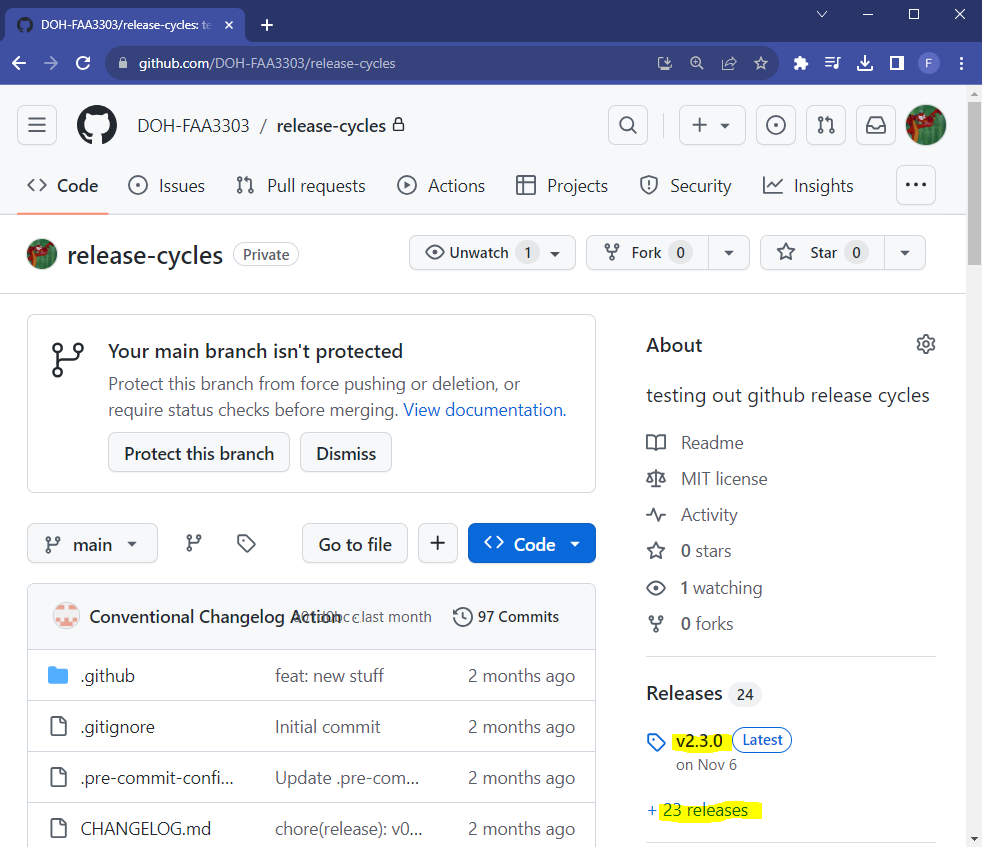
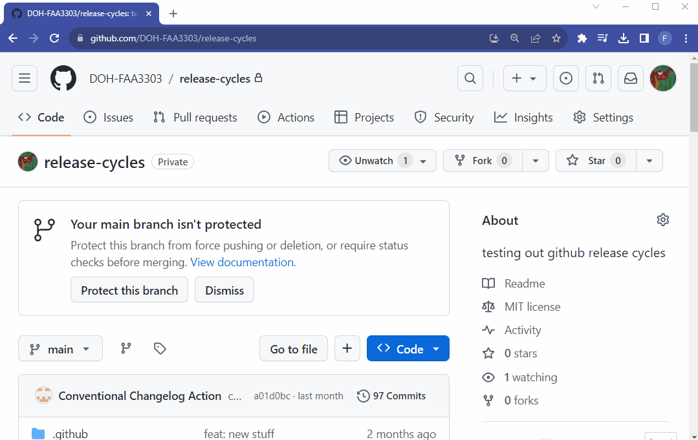
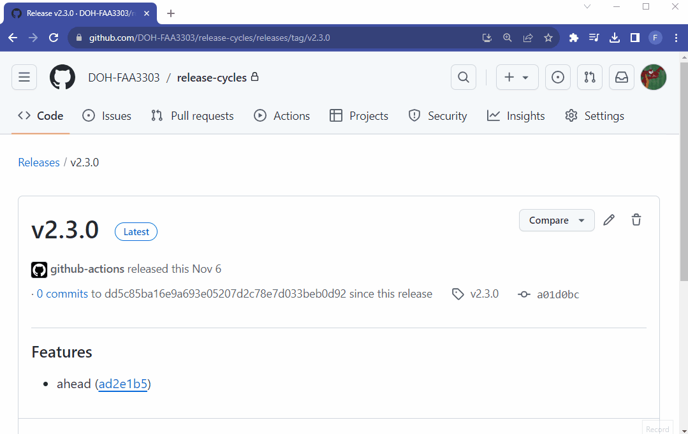
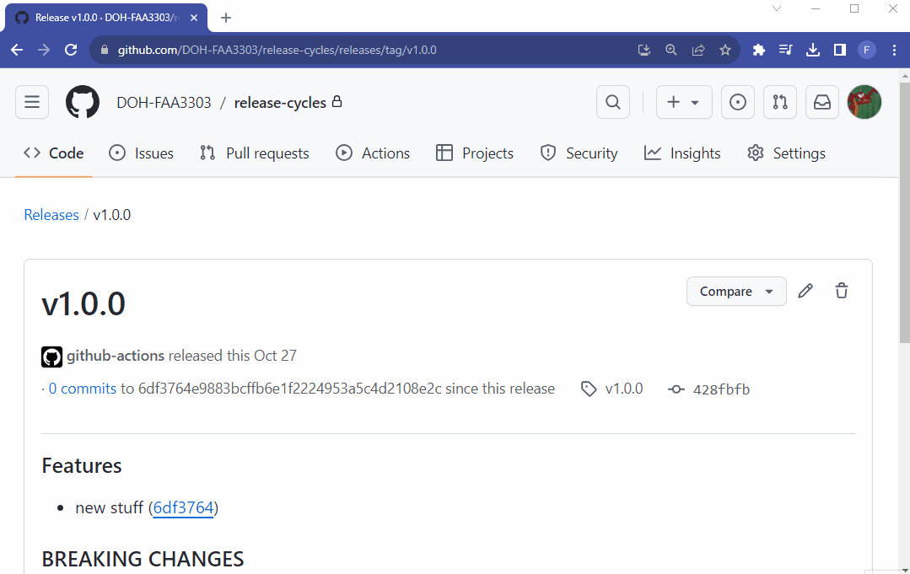
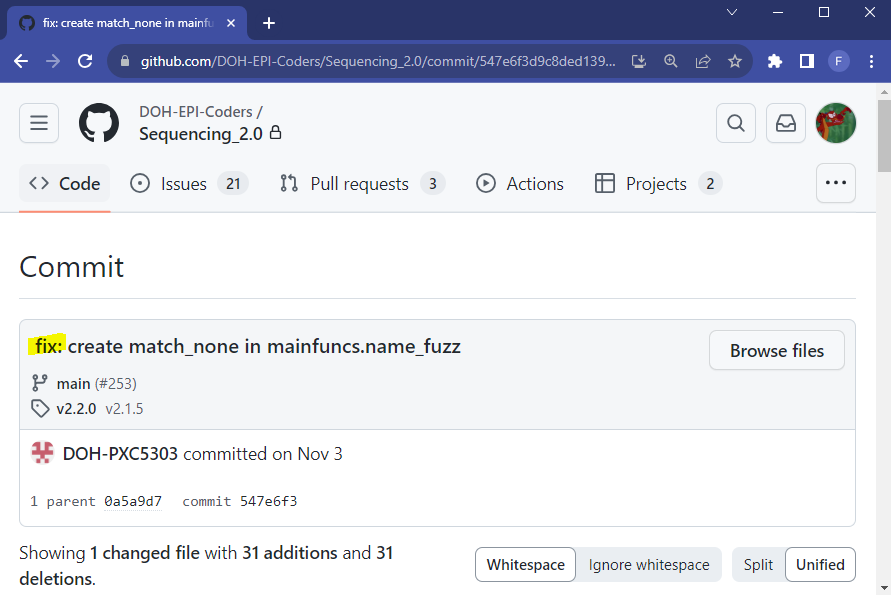
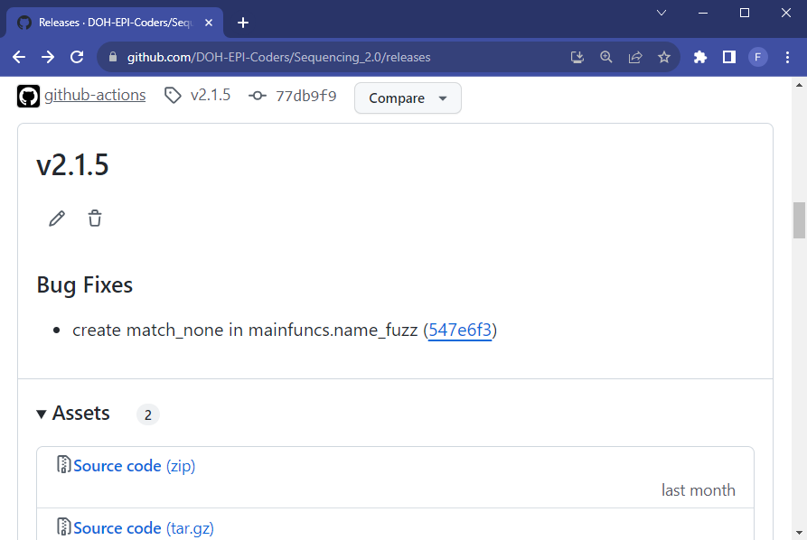

Utilizing and automating Github Releases in your repo
Author
Affiliations
Frank Aragona
Washington Department of Health
Data Integration/Quality Assurance
Published
September 1, 2023
Modified
May 3, 2024
Summary
Github Releases
Helps devs and end users
Changelogs and semantic versioning
Automate the release process
Github Releases
In the right panel of your Github repo there is a section labeled Releases. Here you can create or find a version of your repo’s code base. Each version comes with a changelog, tags, and downloadable source code. Developers and end-users may find this helpful to navigate to what the repo contained at specific release versions and have the source code available for download at the specific version.

If you click on the releases you can see different release tags/versions. Each comes with a changelog, tag, git hash number, and zip files to download the repo at the time the specific version was released. This means you can automatically save repo snapshots and backups whenever your project cycle is released.

you can flip through different releases and tags here

You can click on a tag and it will take you to the repo at the time the specific version was released

Semantic Versioning
Software projects often label their releases using semantic versioning. It looks like this, where the software version numbers all have a definition:
To create the release cycle in your repo you may want to use Conventional Commits.
Conventional Commits are a way to format and standardize your commit messages, which can be used to then automate the repo’s release cycle. For example, one conventional naming method is to label any commit associated with a new feature as feat: plus a commit message.
The word feat: can trigger a Github Action to add that commit to your changelog under the Features header,
and it will up-version the minor release version number.
So if you are on release 1.0.0, a new feat will up-version the cycle to 1.1.0
Commit titles that start with the word fix: as in a bug fix will up-version the patch number of the, i.e. 1.0.0 to 1.0.1
Automating The Release Cycle
You should consider automating your release cycle so that your project cycle is consistent and predictable. There are many different ways to approach this.
Some repos have semi-automatic cycles where there is some manual component of releasing their software, whereas others are fully automated. Manual releases can work too for some scenarios.
Github Action for auto releases
I recommend first creating a test repo for this. In the repo, create a Github Action workflow called changelog.yml. You can copy the full file below:
This workflow will be triggered everytime a branch is merged to main. If that branch has conventinal commit messages the commits will be summarized in the changelog. See an example workflow below:


If I make a branch off of main, I can add features, bug fixes, and more. If I used conventional commit messages in the title (i.e. feat: message, fix: message) the Github Action workflow will detect the trigger word in the title and divide the commit accordingly in the changelog. Notice how the commit title message gets output automatically into the changelog under the header Bug Fixes and the commit + commit hash number are generated.
A new version will be released, and since this was just a bug fix the version number went from v2.1.4 to v2.1.5 since bug fixes only up-version the patch numbers
The first step uses the Github Action TriPSs/conventional-changelog-action@v3 which will scan your
The second step uses the Github Action actions/create-release@v1 which will create git tags with the version number and a changelog with downloadable source code